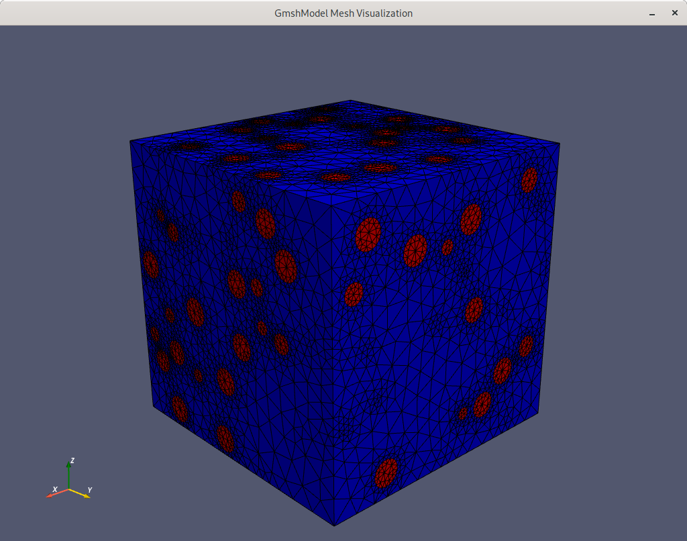
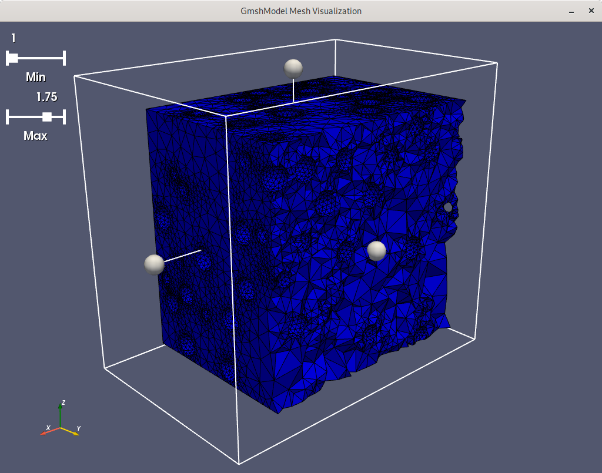

Using the visualization features
After the mesh generation, it is sometimes advantageous to have the possibility
to visualize the resulting mesh in order to check if it matches the own requirements.
In gmshModel, this can be accomplished by using the visualizeMesh() functionality
of the GenericModel: since all available model types inherit the methods of
GenericModel, the method is available for all models.
...
# visualize the mesh of myModel
myModel.visualizeMesh()
...
The mesh visualization is based on the pyvista
library and uses its features. If the visualization method is called, the mesh
is written to a temporary .vtk-file which is then visualized with pyvista.
Within an active visualization window, several key-events allow for extended
features:
|
set view to y-z-plane |
|
set view to z-x-plane |
|
set view to x-y-plane |
|
close visualization window |
|
toggle visualization menu |
|
confirm settings and re-render |
|
restore default settings |
Since the normal way of generating meshes in Gmsh involves the definition of physical groups to, e.g., distinguish different materials, threshold sliders can be used if the visualization menu is activated. They allow to enable or disable different groups according to the defined physical groups in the gmshModel. Additionally, an extraction box widget can be used to extract regions of the mesh and have a closer look to them.
 {kind=link}
{kind=link}